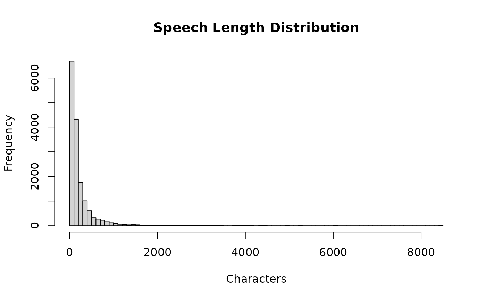

Full corpus of 15,843 speech records from the Science, Technology, Information, Broadcasting and Communications Committee of the 22nd Korean National Assembly (2024). Standing committee meetings only.
Format
A data frame with 15,843 rows and 9 variables:
- assembly
Assembly number (22)
- date
Date of the committee meeting
- committee
Committee name in Korean
- speaker
Speaker label as it appears in the minutes (may include titles)
- role
Speaker role: "legislator", "chair", "minister", "vice_minister", "senior_bureaucrat", "agency_head", "witness", "expert_witness", "nominee", "minister_nominee", "testifier", "public_corp_head", "broadcasting", "committee_staff"
- speaker_name
Cleaned speaker name with titles removed
- member_id
Legislator identifier (MONA_CD, links to
legislators$member_id). Available for all rows; however, non-legislator speakers (ministers, witnesses, etc.) will not match entries inlegislators.- speech_order
Order of the speech turn within the meeting
- speech
Full text of the speech in Korean
Source
National Assembly committee minutes, derived from the speech-assembly-korea project (all_speeches_16_22.parquet).
Details
This dataset contains the complete standing committee speech records (no sampling) for the Science and ICT Committee of the 22nd assembly (June-December 2024). Speeches shorter than 50 characters were excluded.
The role variable distinguishes legislators from government
officials, witnesses, and other participants. Filter to
role == "legislator" for MP speeches only, or compare how
legislators and ministers discuss the same agenda items.
This committee covers AI, telecommunications, broadcasting, space policy, and R&D governance, making it suitable for keyword analysis, topic modeling, and other text analysis exercises.
Examples
data(speeches)
# Distribution of speech lengths
hist(nchar(speeches$speech), breaks = 100,
main = "Speech Length Distribution", xlab = "Characters")

# Speaker roles
table(speeches$role)
#>
#> agency_head broadcasting chair committee_staff
#> 31 46 3821 27
#> expert_witness legislator minister minister_nominee
#> 720 9098 196 151
#> nominee public_corp_head senior_bureaucrat testifier
#> 349 187 62 77
#> vice_minister witness
#> 70 1008
# Most frequent legislator speakers
leg <- speeches[speeches$role == "legislator", ]
head(sort(table(leg$speaker_name), decreasing = TRUE), 10)
#>
#> 김현 노종면 최형두 이훈기 이정헌 한민수 황정아 김우영 조인철 이준석
#> 1105 826 717 630 576 527 512 503 491 384
# Simple keyword search
ai <- speeches[grepl("AI|인공지능", speeches$speech), ]
nrow(ai)
#> [1] 341